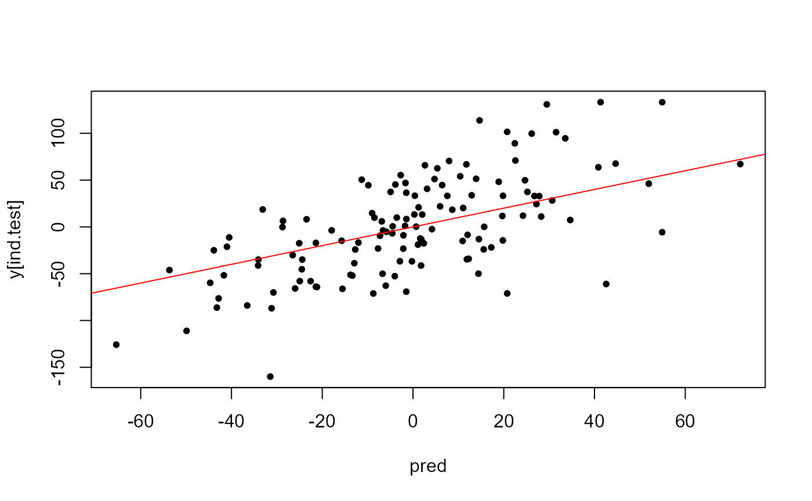

Fitting penalized regressions
Florian Privé
May 22, 2019
Source:vignettes/penalized-regressions.Rmd
penalized-regressions.RmdIn R package {bigstatsr}, you can fit efficient penalized (linear and
logistic) regressions using functions big_spLinReg() and
big_spLogReg(). Similar implementation of Cox regression is
an area of future development.
You might want to look at the corresponding paper and cite it:
Privé, Florian, Hugues Aschard, and Michael GB Blum. “Efficient implementation of penalized regression for genetic risk prediction.” Genetics (2019). [Open access]
Data
To illustrate how to use big_spLinReg() and
big_spLogReg(), let us use some simulated data:
Cross-Model Selection and Averaging (CMSA)
Functions big_spLinReg() and big_spLogReg()
automatically perform a procedure similar to cross-validation to choose
hyper-parameters \(\lambda\) and \(\alpha\) of the elastic net
regularization:
![Illustration of one turn of the Cross-Model Selection and Averaging (CMSA) procedure. First, this procedure separates the outer training set (blue *and* red) in K folds (e.g. 10 folds). Secondly, in turn, each fold is considered as an inner validation set (red) and the other (K - 1) folds form an inner training set (blue). A "regularization path" of models is trained on the inner training set and the corresponding predictions (scores) for the inner validation set are computed. The model that minimizes the loss on the inner validation set is selected. Finally, the K resulting models are averaged. We also use this procedure to derive an early stopping criterion so that the algorithm does not need to evaluate the whole regularization paths, making this procedure much faster than standard cross-validation.](https://raw.githubusercontent.com/privefl/paper2-PRS/master/figures/simple-CMSA.png)
Illustration of one turn of the Cross-Model Selection and Averaging (CMSA) procedure. First, this procedure separates the outer training set (blue and red) in K folds (e.g. 10 folds). Secondly, in turn, each fold is considered as an inner validation set (red) and the other (K - 1) folds form an inner training set (blue). A “regularization path” of models is trained on the inner training set and the corresponding predictions (scores) for the inner validation set are computed. The model that minimizes the loss on the inner validation set is selected. Finally, the K resulting models are averaged. We also use this procedure to derive an early stopping criterion so that the algorithm does not need to evaluate the whole regularization paths, making this procedure much faster than standard cross-validation.
Sequences of hyper-parameters
The first (maximum) value of the lambda sequence (\(\lambda_{max}\)) is computed automatically and corresponds to enough regularization to have no variable entering the model. Then, a sequence of
nlambda(200 by default) values is used, equally spaces on a log-scale between \(\lambda_{max}\) and \(\lambda_{max}\) *lambda.min.A sequence of \(\alpha\) can be defined by the user using
alphas(default is1). We recommend to use a grid on a log-scale (e.g.10^(-(0:4))).
Stopping criterion for regularization path
There are three main reasons for which regularization paths can end:
the current model include too many non-zero variables (
dfmaxequals50e3by default, you can useInf)the early stopping criterion is reached, which means that models are getting worse for the inner validation set; you can control this using
nlam.min(the minimal number of \(\lambda\) values to try before stopping) andn.abort(the number of \(\lambda\) values for which the model is getting worse)the
nlambda\(\lambda\) values have been used; you might want to reducelambda.minto go further down the path
It is possible to fit the K folds for each value of
alphas in parallel using parameter ncores.
You should check why regularization paths stop. For this,
you can use both methods plot() and summary().
Let us make an example below.
mod <- big_spLinReg(X, y[ind.train], ind.train = ind.train, K = 4)
summary(mod)## # A tibble: 1 × 9
## alpha power_adaptive power_scale validation_loss intercept beta nb_var
## <dbl> <dbl> <dbl> <dbl> <dbl> <list> <int>
## 1 1 0 1 1794. -2.23 <dbl [730]> 369
## # ℹ 2 more variables: message <list>, all_conv <lgl>
summary(mod)$message## [[1]]
## [1] "No more improvement" "No more improvement" "No more improvement"
## [4] "No more improvement"Here, "No more improvement" means that the early
stopping criterion has been reached. We can see the validation loss
getting worse at some point:
plot(mod)## Warning: The `guide` argument in `scale_*()` cannot be `FALSE`. This was deprecated in
## ggplot2 3.3.4.
## ℹ Please use "none" instead.
## ℹ The deprecated feature was likely used in the bigstatsr package.
## Please report the issue at <https://github.com/privefl/bigstatsr/issues>.
## This warning is displayed once every 8 hours.
## Call `lifecycle::last_lifecycle_warnings()` to see where this warning was
## generated.
For small datasets, you might want to reduce the number of folds
(K = 10 bu default). For large datasets, you might want to
decrease n.abort (i.e. stop the regularization path
quickly) as the path is usually much more smooth and fitting is more and
more demanding as we advance along the regularization path (because more
and more variables are used in the model).
Use predict() to use the model for data in the test
set:

Other parameters
You can add covariates as a standard R matrix using parameter
covar.train; it will fit the model as ifX[ind.train, ]andcovar.trainwerecbinded.You can now use different scalings with
power_scale(1 is the default standardization, 0 corresponds to no scaling, and 0.5 to Pareto scaling), and some adaptive lasso withpower_adaptivethat, when > 0, penalizes less variables with larger marginal effects. These two new parameters have been introduced in https://doi.org/10.1101/2021.02.05.21251061, and you can specify a vector of values, where the best value will be chosen within the CMSA procedure (same as withalphas). Note that these new parameters assume that you use lasso (i.e. \(\alpha = 1\)).You can apply some multiplicative penalization factors (
pf.Xandpf.covar) to penalize variables differently (possibly no penalization for some variables using0).Functions
big_spLinReg()andbig_spLogReg()are not deterministic because folds are chosen randomly. One way that should ensure reproducibility is to define your own folds using parameterind.sets(using e.g.sample(rep_len(1:K, length(ind.train)))).You can add an offset to your model using
base.train(on the linear scale, do not provide probabilities!).
Time and memory requirements (from the paper)
The computation time of our PLR implementation mainly depends on the sample size and the number of candidate variables (variables that are included in the gradient descent). Indeed, the algorithm is composed of two steps: first, for each variable, the algorithm computes an univariate statistic that is used to decide if the variable is included in the model (for each value of \(\lambda\)). This first step is very fast (if data can be quickly read from disk). Then, the algorithm iterates over a regularization path of decreasing values of \(\lambda\), which progressively enables variables to enter the model (see first figure). In the second step, the number of variables increases and computations stop when an early stopping criterion is reached (when prediction is getting worse on the corresponding validation set, see first figure).
For outcomes that require lots of variables to predict, such as predicting height and when using huge datasets such as the UK Biobank, the algorithm might iterate over >100,000 variables, which is computationally demanding. On the contrary, for outcomes that require only a few variables to predict, such as autoimmune diseases, the number of variables included in the model is much smaller so that fitting is very fast (only 13 min for 150K women of the UK Biobank for breast cancer).
Memory requirements are tightly linked to computation time. Indeed, variables are accessed in memory thanks to memory-mapping when they are used. When there is not enough memory left, the operating system (OS) frees some memory for new incoming variables. Yet, if too many variables are used in the gradient descent, the OS would regularly swap memory between disk and RAM, severely slowing down computations.